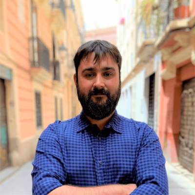
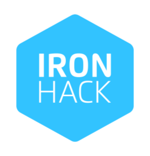

¡Hola! Soy
Joan Carballo
Full Stack Web Developer
carballo [@] joancarballo.com - 645 215 996
Me presento
¿Quien soy?
-

Joan Carballo Cabanes
Soy un valenciano que ahora vive en Alcalá de Henares (Madrid), bastante extrovertido y con ganas de aprender, siempre tengo objetivos que alcanzar. Tengo presente que si algo no es divertido, no vale la pena y por eso trato de mejorar todo lo que hago para que dedicarle tiempo me resulte entretenido.
Actualmente soy desarrollador web Full Stack gracias a Ironhack Madrid, anteriormente he creado webs en IOWA Dynamics y he sido redactor de tecnología en Ontecnia.
Como soy un culo inquieto, organizo Ignite Madrid (un evento cultural con +200 participantes), participo en eventos tecnológicos, escribo en mi blog de viajes, trasteo con gadgets como las impresoras 3D o los drones, leo, juego y monto LEGOs.
Mis estudios
Formado en desarrollo web full stack en Ironhack Madrid, soy Técnico Superior en Telecomunicaciones e Informática.
Ironhack Madrid
-

Aquí me hice desarrollador
2019-2020
Certificado de Curso Completado: WDPT Madrid Oct 2019
Realicé el bootcamp de Web Development de Ironhack en modo Part-Time aprendiendo todas las tecnologías imprescindibles para un desarrollador Full Stack MERN con especial foco en escribir código limpio, metodologías ágiles y TTD.
Algunas tecnologías que aprendí:
Proyectos destacados:
Blasco Ibañez
Aquí aprendí un oficio
2006-2008
Tengo el título de Técnico Superior en Sistemas de Telecomunicaciones e Informáticos con conocimientos de infraestructuras de red, sistemas de telecomuncaciones, gestión de proyectos y electrónica, incluyendo más de 400h de prácticas laborales.
Algunas tecnologías que aprendí:
Idiomas
Hablo y escribo en los siguientes idiomas
Mi experiencia laboral
Más de 10 años trabajando en empresas relacionadas con Internet.
IOWA
Aquí trabajé y organicé
2014-2020
Cofundé IOWA Dynamics en 2014 en València como un estudio de diseño y desarrollo web enfocándome sobre todo a las webs en Wordpress y sus contenidos. Trabajamos con los mejores clientes y agencias, como puedes ver en IOWADynamics.com
Mis tareas en IOWA Dynamics consistían en:
Ontecnia
Aquí trabajé
2009-2014
Entré en Ontecnia (València) como redactor en webs del área de tecnología como Malavida.com para ascender llegando a ser Director de Proyecto y Director de Social Media de todos los portales web de la empresa.
Ontecnia es una empresa con portales líderes de su segmento como Lecturalia (TOP3 en Libros y literatura) o Malavida (TOP5 en Descargas de software), entre otros.
Proyectos paralelos
Proyectos a los que dedico mi tiempo libre porque me gusta hacerlo.
Ignite Madrid
Aquí organizo
Ignite Madrid es un evento de charlas ultra-rapidas en el que los oradores tienen 5 minutos y 20 diapositivas que pasan automáticamente cada 15 segundos para contar lo que quieran sobre el tema que quieran. Y tenemos más normas, la más importante de todas es que NADIE puede vender su producto o servicio durante una charla. Empecé en el equipo de organización de Ignite Valencia pero luego me liaron y ahora organizo también Ignite Madrid.

Momento CarPi
Aquí viajamos y luego escribimos
Momento CarPi es el blog de viajes que escribo junto con @pilarmr. En él contamos todos nuestros viajes por el mundo y ayudamos a quien nos lea con trucos, anécdotas y guías de cada destino en el que hemos estado. Además, nos sirve para generar contenido en nuestras redes sociales, claro.

Por cierto, siempre viajo con un Velociraptor porque alguien tiene que velar contra los #VelociraptorAttack...

Tampoco me olvido nunca de llevar un fuet y hacerle fotos por todo el mundo. Yo lo llamo #EmbutidosViajeros

Tomemos un café o algo
Contacta conmigo para conocernos, hacer negocios, tomarnos un café o una cerveza.
-
Email
carballo [arroba] joancarballo.com
-
Teléfono
(+34) 645 215 996 -
Para todo lo demás... (o incluso mayor rapidez)